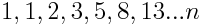

Introduction
In computer science, a recursive function is a function re-calling itself until a certain criteria is met.
Other types of recursion
can be found not only in computer science but also in math, for example in the -
Fibonacci-sequence
each index is just the sum of the two preceding digits,

and a value for an index can simply be obtained as

History
recursion can be traced back to the 19th century, decades before any modern computers, although different from one another they do share their similarities.
Overview
We'll demonstrate
an objective use with a person class and a family tree.
We'll define
a matching recursive function to the family tree problem.
We'll identify
an interactable recursive function visualization.
Example - Family tree
Finding 'Shlomo'
we'll look for 'shlomo' in an array of humans with human children using a -
Recursive function procedure
we'll define a function that receives a human and checks the criteria
human.name is 'Shlomo'
else
pass each individual child of the human to the current function (re-calling it).
Resulting in a
loop that getting deeper and deeper within, until 'Shlomo' is found.
Python - Human class
We'll define a human class
with a name and children fields.
class Human:
\T1def __init__(self, name):
\T2self.name = name
\T2self.children = children
So now
we can define a particular human as
Human('Bob the 3rd')
Step by step explanation
class Human:
assiging an identity to our class ("human").
def __init__(self, name)
__init__ is the class constructor (a function that constructs an instance).
self is a reference to the current instance.
self.name = name
self.children = children
assigning current instance name & children fields respectively.
Visualization - family tree
Hello